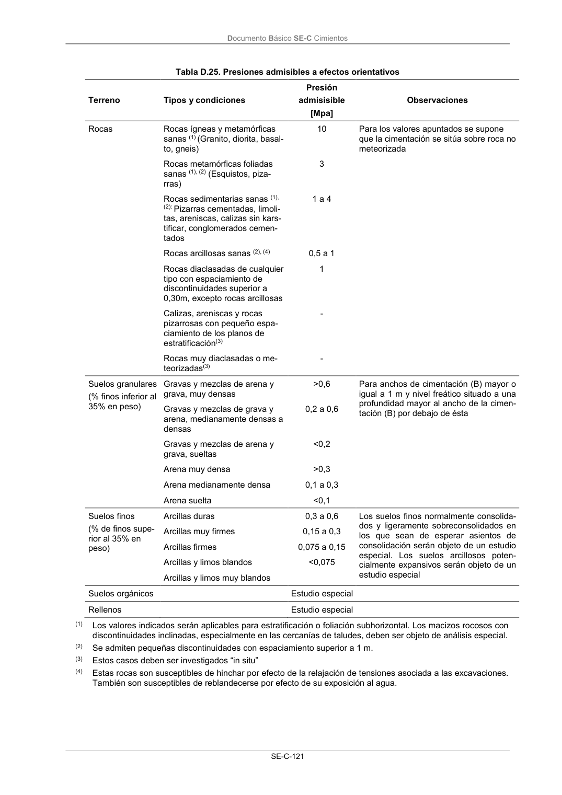

DB-SE-C · Página 126 · versión 2019-12-20
SHA256: a71133f4b0dca253e45ea3071c70f2a512354bcc5cd841bf89b1a502f567ac5e · página física 126 de 165 · métodos de encabezado
solo si están cotejados.
Documento · ← p. 125 · p. 127 →
Formatos: Markdown · JSON de bloques · PDF p. 126 · imagen PNG
Documento Básico SE-C Cimientos SE-C-121 Tabla D.25. Presiones admisibles a efectos orientativos Terreno Tipos y condiciones Presión admisisible [Mpa] Observaciones Rocas Rocas ígneas y metamórficas sanas (1) (Granito, diorita, basal- to, gneis) 10 Para los valores apuntados se supone que la cimentación se sitúa sobre roca no meteorizada Rocas metamórficas foliadas sanas (1), (2) (Esquistos, piza- rras) 3 Rocas sedimentarias sanas (1), (2): Pizarras cementadas, limoli- tas, areniscas, calizas sin kars- tificar, conglomerados cemen- tados 1 a 4 Rocas arcillosas sanas (2), (4) 0,5 a 1 Rocas diaclasadas de cualquier tipo con espaciamiento de discontinuidades superior a 0,30m, excepto rocas arcillosas 1 Calizas, areniscas y rocas pizarrosas con pequeño espa- ciamiento de los planos de estratificación(3) - Rocas muy diaclasadas o me- teorizadas(3) - Suelos granulares (% finos inferior al 35% en peso) Gravas y mezclas de arena y grava, muy densas >0,6 Para anchos de cimentación (B) mayor o igual a 1 m y nivel freático situado a una profundidad mayor al ancho de la cimen- tación (B) por debajo de ésta Gravas y mezclas de grava y arena, medianamente densas a densas 0,2 a 0,6 Gravas y mezclas de arena y grava, sueltas <0,2 Arena muy densa >0,3 Arena medianamente densa 0,1 a 0,3 Arena suelta <0,1 Suelos finos (% de finos supe- rior al 35% en peso) Arcillas duras 0,3 a 0,6 Los suelos finos normalmente consolida- dos y ligeramente sobreconsolidados en los que sean de esperar asientos de consolidación serán objeto de un estudio especial. Los suelos arcillosos poten- cialmente expansivos serán objeto de un estudio especial Arcillas muy firmes 0,15 a 0,3 Arcillas firmes 0,075 a 0,15 Arcillas y limos blandos <0,075 Arcillas y limos muy blandos Suelos orgánicos Estudio especial Rellenos Estudio especial (1) Los valores indicados serán aplicables para estratificación o foliación subhorizontal. Los macizos rocosos con discontinuidades inclinadas, especialmente en las cercanías de taludes, deben ser objeto de análisis especial. (2) Se admiten pequeñas discontinuidades con espaciamiento superior a 1 m. (3) Estos casos deben ser investigados “in situ” (4) Estas rocas son susceptibles de hinchar por efecto de la relajación de tensiones asociada a las excavaciones. También son susceptibles de reblandecerse por efecto de su exposición al agua.
